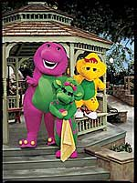
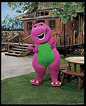

New Barney & Friends Episodes Debut On PBS!

Celebrating 10 years on PBS,
Barney is starring in 20 brand-new episodes beginning September 2 on
public television stations nationwide. The new episodes will feature
a new setting and new cast - but still offer the same core educational
and pro-social elements that have earned the trust of a generation of
parents...and taught a generation of children! The new episodes also
feature interactivity to engage the viewer, including cameos with real
kids who playfully respond to Barney by making silly faces, hugging,
or pretending to fly in an airplane. And for the first time ever, Barney
speaks directly to children at home. As always, music remains an important
element, with the new shows featuring fun, new songs, as well as classic
Barney favorites.
Barney's New Park
Setting!
The new series features both
new exterior and interior sets. Outside, there is a safe and familiar
park setting with rolling hills, trees, rock formations, a rustic bridge
over a pond, as well as a gazebo and a play/swing set. A special "idea
bench" is the ideal place to sit and use one's imagination. The
park provides myriad opportunities for exploring nature and outdoor
activities. In the background, adults, children and pets can also be
seen enjoying themselves. A restored caboose houses a spacious indoor
activity center with a library of children's books, an armoire brimming
with fun dress-up items, a craft center and a fish tank.

Barney
& Friends Home | PBS Kids Home
| Music | Games
| Coloring | Storytime
Parents & Educators | TV
Times
|